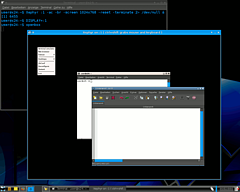
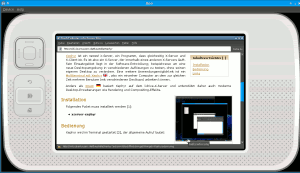

Xephyr
Dieser Artikel wurde für die folgenden Ubuntu-Versionen getestet:
Ubuntu 16.04 Xenial Xerus
Ubuntu 14.04 Trusty Tahr
Artikel für fortgeschrittene Anwender
Dieser Artikel erfordert mehr Erfahrung im Umgang mit Linux und ist daher nur für fortgeschrittene Benutzer gedacht.
Zum Verständnis dieses Artikels sind folgende Seiten hilfreich:
Xephyr  ist ein "nested X-Server", ein Programm, das gleichzeitig X-Server und X-Client ist. Es ist also ein X-Server, der innerhalb eines anderen X-Servers läuft. Sein Einsatzgebiet liegt in der Software-Entwicklung; beispielsweise um eine neue Desktopumgebung in verschiedenen Auflösungen zu testen, ohne den eigenen Desktop zu verändern. Eine weitere Anwendungsmöglichkeit ist ein Multiterminal mit Xephyr , also ein einzelner Computer, an dem zur gleichen Zeit mehrere Benutzer (mit verschiedenen Desktops) arbeiten können. Solche Rechner werden auch als Terminalserver bezeichnet.
ist ein "nested X-Server", ein Programm, das gleichzeitig X-Server und X-Client ist. Es ist also ein X-Server, der innerhalb eines anderen X-Servers läuft. Sein Einsatzgebiet liegt in der Software-Entwicklung; beispielsweise um eine neue Desktopumgebung in verschiedenen Auflösungen zu testen, ohne den eigenen Desktop zu verändern. Eine weitere Anwendungsmöglichkeit ist ein Multiterminal mit Xephyr , also ein einzelner Computer, an dem zur gleichen Zeit mehrere Benutzer (mit verschiedenen Desktops) arbeiten können. Solche Rechner werden auch als Terminalserver bezeichnet.
|  |
| Xephyr mit Openbox unter Xfce |
Anders als Xnest basiert Xephyr auf dem kdrive-X-Server und unterstützt daher auch moderne Desktop-Erweiterungen wie Rendering und Compositing-Effekte.
Installation¶
Folgendes Paket muss installiert werden [1]:
xserver-xephyr (universe)
 mit apturl
mit apturl
Paketliste zum Kopieren:
sudo apt-get install xserver-xephyr
sudo aptitude install xserver-xephyr
Bedienung¶
Xephyr wird im Terminal gestartet [2]. Der allgemeine Aufruf lautet:
Xephyr DISPLAY OPTIONEN
Um beispielsweise einen virtuellen Bildschirm mit 1024x768 Pixeln, erlaubtem X-Forwarding (ac = disable access control restrictions) und schwarzem Hintergrund zu starten, dient folgender Aufruf:
Xephyr :1 -ac -br -screen 1024x768 -reset -terminate &
Die Optionen -reset und -terminate sollen dafür sorgen, dass Xephyr nach dem Schließen des Fensters automatisch sauber beendet wird, was nicht immer funktioniert.
Damit weitere Befehlsaufrufe die Programme nicht auf dem Standard-Bildschirm, sondern auf dem virtuellen Xephyr-Bildschirm aufrufen, muss nun die DISPLAY-Umgebungsvariable für das geöffnete Terminal gesetzt werden.
DISPLAY=:1
Nun können aus diesem Terminal heraus Programme auf dem Xephyr-Bildschirm gestartet werden. Weitere Startoptionen erfährt man mit
Xephyr -help
Frontends/Wrapper¶
Gtk-Xephyr¶
Gtk-Xephyr ist ein (leicht erweiterbares) Skript mit Zenity-Oberfläche, das den Start von Xephyr vereinfacht. Es bietet Auswahlmenüs für einige Auflösungen und die Display-Nummer, worauf noch ein erster Befehl, beispielsweise ein Session-Manager, übergeben werden kann.
Xoo¶
Xoo ist eine Testumgebung für Geräte mit kleinen Bildschirmen, wie Handhelds, Pocket-PCs und Mobiltelefone. Das GTK-Programm ist als Wrapper rund um die Funktionen eines nested Xservers konzipiert und kann sowohl XNest als auch Xephyr benutzen. Verschiedene Geräte können als Themes geladen werden, die jeweils aus einer XML-Datei und einem Bild bestehen. Bedienknöpfe können benutzt, bzw. über die XML-Theme-Datei belegt werden.
Installation¶
Folgendes Paket muss installiert werden [1]:
xoo (universe, nur bis Ubuntu 14.04)
mit apturl
Paketliste zum Kopieren:
sudo apt-get install xoo
sudo aptitude install xoo

Bedienung/Konfiguration¶
Xoo kann einfach mit dem Befehl xoo gestartet werden, erwartet aber per Standardeinstellung Xnest und nicht Xephyr. Soll Xephyr benutzt werden, muss der Befehl wie folgt lauten:
xoo --xnest-bin /usr/bin/Xephyr
Weitere Einstellungen können über das Menü im xoo-Fenster erreicht werden. Unter "Device -> Select Device..." kann ein Theme, also das darzustellende Gerät gewählt werden. Der Menüpunkt "Device -> Einstellungen" bietet unter anderem die Möglichkeit, einen Befehl festzulegen, der zuerst auf dem xoo-Bildschirm ausgeführt wird, zum Beispiel matchbox-session.
Über Parameter können einige Einstellungen schon beim Start übergeben werden:
xoo --xnest-bin /usr/bin/Xephyr -xo "-ac -br -reset -terminate" -d ipaq3800
Mit dem Parameter -xo werden Parameter an Xephyr übergeben: der Parameter -d gibt ein Gerät bzw. Theme an.
Themes¶
Neue Themes findet man in der Codeverwaltung  der Entwickler. Jeder Theme besteht aus einer Bilddatei (png) und einer XML-Datei. Beide Dateien müssen im Ordner /usr/share/xoo gespeichert werden.
der Entwickler. Jeder Theme besteht aus einer Bilddatei (png) und einer XML-Datei. Beide Dateien müssen im Ordner /usr/share/xoo gespeichert werden.
Links¶
Multiterminal mit Xephyr
- WikibooksHow to Xephyr - AKA Multiple, nested X sessions
- Anleitung und Diskussion bei Ubuntuforums.org
- Erstellt mit Inyoka
-
 2004 – 2017 ubuntuusers.de • Einige Rechte vorbehalten
2004 – 2017 ubuntuusers.de • Einige Rechte vorbehalten
Lizenz • Kontakt • Datenschutz • Impressum • Serverstatus -
Serverhousing gespendet von